1.Le Parc National Khao Sok: Vous sillonnerez des îlots recouvertes d’une jungle épaisse, jonchés de falaises calcaires et abritant une faune tropicale exotique, à l’instar des perroquets et des éléphants. Réserve naturelle unique au monde, c’est là que vous verrez les formations karstiques en forme de tours, comme flottant dans l’eau comme des glaçons dans un verre d’eau.
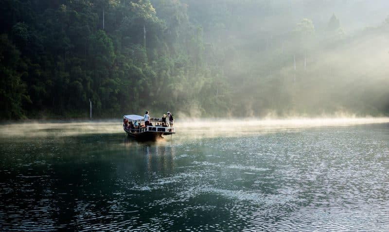2. Parc National de Khao Yai : Situé à 3 heures de route de Bangkok, le Parc National de Khao Yai est un poumon de verdure ressourçant après l’effervescence tumultueuse de Bangkok. Le parc constitue l’une des plus grandes forêts d’Asie et est inscrit au patrimoine mondial de l’UNESCO. Alors que faire en Thaïlande ? Dans ce parc, on peut voir plus de 2 000 espèces de plantes différentes et faire de la randonnée sans souffrir de la chaleur : le massif culmine à 1 351 mètres d’altitude. Pour en explorer les beautés, un ranger expérimenté sera nécessaire car le parc est plutôt reculé dans la jungle tropicale.
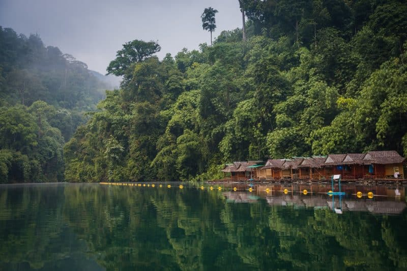3. Koh Samui: Koh Samui vous ira mieux si vous venez visiter la Thaïlande en famille ou si vous recherchez des plages bordées de cocotiers plutôt calmes et familiales. Les plages Chaweng et Mae Nam, par exemple, sont à voir. La cascade Na Muang, la plus haute de l’île (30 mètres), permettra de changer un peu du littoral, mais il est mieux de la voir en été, durant la saison humide. Le Wat Phra Yai est un site touristique de l’île : c’est le temple du Grand Bouddha, une statue du Bouddha peinte en or, haute de 15 mètres.
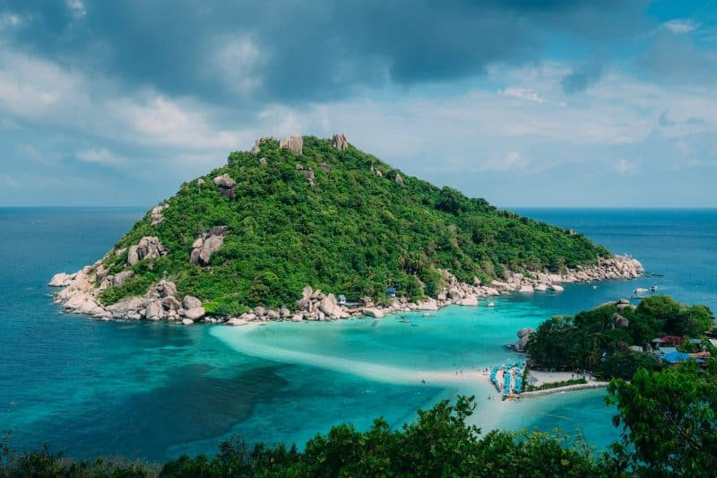1. Khao Soy :Le Khao Soy est une délicieuse soupe de curry avec des nouilles de blé et du poulet, un plat typique du Nord-Ouest de la Thaïlande.
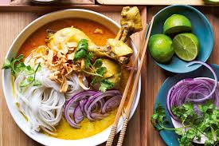2. Moo Nam Tok:Cette salade simple est tout ce que vous aimez dans la cuisine thaïlandaise : épicée, avec des herbes fraîches et du jus de citron vert acidulé , associée à des steaks de filet de porc juteux. La menthe fraîche est un ingrédient essentiel de ce repas rafraîchissant et délicieux qui ferait un fabuleux dîner de semaine ou un déjeuner de week-end.
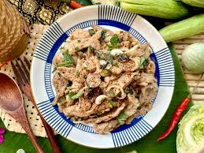3. Laab:Ce plat est connu sous le nom de Laab ou Larb, est épicé et tout en fraîcheur grâce aux fines herbes comme la menthe et le basilic thaï.
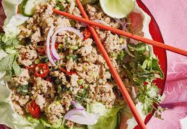1. Wat Arun:Le Wat Arun est un temple bouddhiste de Bangkok, Thaïlande. Ce temple est situé dans le quartier de Bangkok Yai, sur la rive droite du fleuve Chao Phraya. Son nom complet est Wat Arunratchawararam Ratchaworamahavihara. Le temple doit son nom au dieu Hindou Aruna, symbole de l'aurore.

2. Wat Phra Kaeo: Le Wat Phra Kaeo, ou Temple du Bouddha d'émeraude, est un temple bouddhiste situé dans le cœur historique de Bangkok, l'un des lieux sacrés les plus importants de la Thaïlande.

3. Wat Phrathat Doi Suthep: Le Wat Phrathat Doi Suthep Rat Wora Wihan, appelé plus simplement Wat Prathat Doi Suthep est un temple bouddhiste de la province de Chiang Mai, en Thaïlande.

1. Cholnan Srikaew :Chonlanan Srikaew (thaï : ชลน่าน ศรีแก้ว) est un médecin et un homme politique thaïlandais.
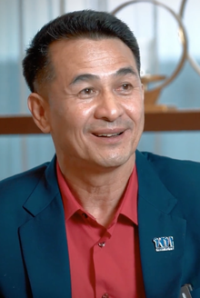2. Anutin Charnvirakul :Anutin Charnvirakul1 (thaï : อนุทิน ชาญวีรกูล ; RTGS : Anuthin Chanwirakun) est un homme politique thaïlandais.
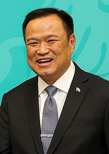3. Pimpatra Wichaikul: Pimpatra Wichaikul (thaï : พิมพ์ภัทรา วิชัยกุล) est une femme politique thaïlandais.
1. bodyslam :Formé en 2002 par รัฐพล พรรณเชษฐ์, ธนดล ช้างเสวก et อาทิวราห์ คงมาลัย à Bangkok, bodyslam est un groupe de rock thaï des années 2000 en activité depuis 22 ans.
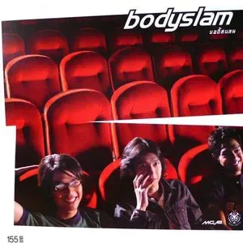2. Mag Lam: Née le 21 juillet 1990 à Hong Kong, Lam Yan Tung, plus connue sous le nom de Mag Lam, est une chanteuse hongkongaise.
.webp)
3. Palmy: Née le 7 août 1981 à Bangkok, Palmy est une musicienne thaïlandaise.
.webp)
1. Berkrerk Chartvanchai :son vrai nom Tinapong Hantanakul, est un boxeur thaïlandais né le 25 octobre 1944 à Bangkok et mort le 7 mars 20221.
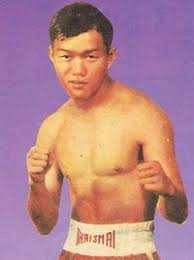2. Bandit Chuangchai : est un athlète thaïlandais, spécialiste du sprint.
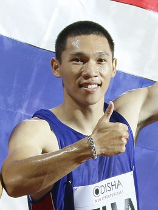3. Suttisak Singkon: est un athlète thaïlandais, spécialiste du décathlon.
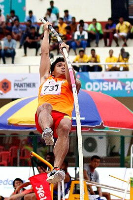1. Chart Korbjitti: est un écrivain thaïlandais qui reçut deux fois le prix des écrivains de l'Asie du Sud-Est pour la Thaïlande (S.E.A. Write Award), l'équivalent du prix Goncourt en Asie du Sud-Est, pour ses romans, La Chute de Fak (Khamphiphaksa - The Judgment) en 1981 et Sonne l'heure en 1994.
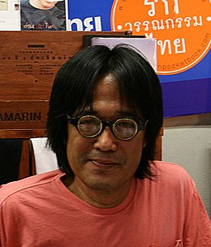2. Ngarmpun Vejjajiva : Ngamphan Wetchachiwa, aussi connue comme Jane Vejjajiva est une femme de lettres, auteure de littérature pour la jeunesse et traductrice thaïlandaise. Elle est la sœur de l'ancien premier ministre Abhisit Vejjajiva.
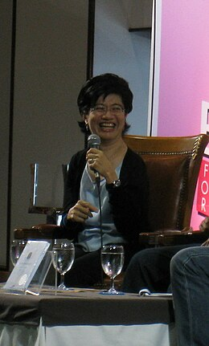3. Khamsing Srinawk: Khamsing Srinawk ou Khamsing Srinok est un écrivain originaire de la région de l'Isan en Thaïlande. Il écrit aussi sous le nom de Lao Khamhawm ou Lao Khamhom.
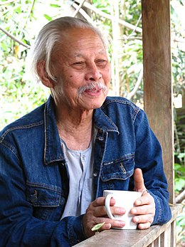